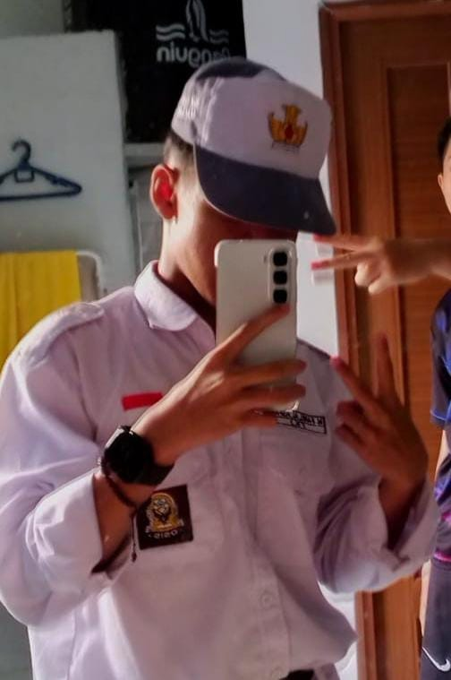

Halo, Saya Muhammad Farel Al Asfani
Selamat datang di portofolio digital saya. Saya berfokus mendalami ITNSA (IT Network & System Administration) dan dunia teknologi digital, sembari terus memupuk sportivitas serta kepemimpinan tim melalui olahraga Futsal.

Muhammad Farel Al Asfani
SMK Telkom Malang • 35 TKJ
Minat & Hobi
Futsal & Sportivitas
Bidang Keahlian
ITNSA / SysAdmin
Kompetensi, Minat, dan Dedikasi
Perpaduan antara kecakapan teknis sistem jaringan, olahraga beregu, serta rasa ingin tahu yang tinggi pada teknologi digital.
ITNSA
Mendalami IT Network & System Administration, termasuk konfigurasi router/switch, manajemen server, sistem operasi Linux/Windows, serta pemeliharaan keandalan jaringan.
Futsal & Sportivitas
Menekuni olahraga futsal secara aktif untuk membentuk ketahanan fisik, fokus strategis di bawah tekanan, rasa percaya antar-rekan, serta kedisiplinan kerja tim yang tinggi.
Tech Enthusiast
Memiliki antusiasme tinggi untuk terus mengikuti tren teknologi terbaru, AI, otomasi sistem, arsitektur cloud, serta pembaruan teknologi perangkat keras dan lunak.
Web Development & UI
Mengembangkan website responsif, estetik, dan mudah diakses menggunakan standar kode web modern, estetika tata letak, serta integrasi komponen yang fleksibel.
Siswa Berdedikasi di SMK Telkom Malang
Sebagai siswa di kelas 35 TKJ SMK Telkom Malang, saya terbiasa belajar dengan standar disiplin tinggi, budaya kerja profesional, dan kurikulum kejuruan yang berbasis industri.
Bagi saya, penguasaan teori jaringan harus selalu dibarengi dengan praktik konfigurasi yang solid serta kemampuan bekerja sama secara harmonis di dalam tim.
35 TKJ
Kompetensi Keahlian
100%
Komitmen & Semangat
🎯 Prinsip & Karakter Kerja
- ✓ Ketelitian Teknis: Memastikan setiap konfigurasi routing, server, dan kabel terpasang dengan presisi.
- ✓ Semangat Sportivitas: Menjunjung tinggi kejujuran, saling menghargai pendapat, dan komunikasi efektif.
- ✓ Pembelajar Cepat (Agile Learner): Terus mencari wawasan baru untuk mengatasi kendala teknologi dengan solusi optimal.
Tertarik Berdiskusi atau Berkolaborasi?
Saya siap berdiskusi seputar proyek jaringan, sistem administrasi, pengembangan web, maupun kegiatan olahraga futsal.